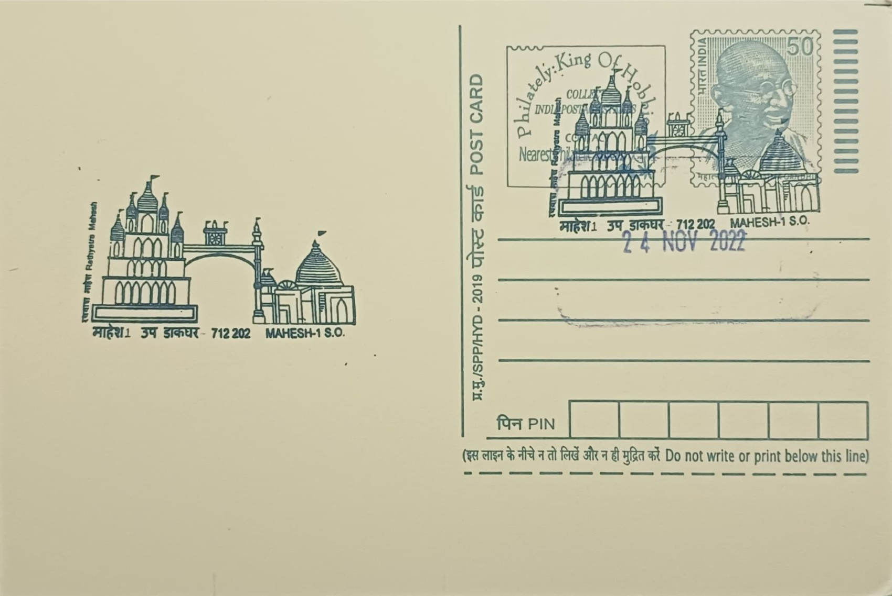

Rathyatra Mahesh
রথযাত্রা, মাহেশ


The Jagannath temple at Mahesh, on the banks of the Bhagirathi in Hooghly district, owes its origin to a legend centred on the wandering Bengali sadhu Dhrubananda Brahmachari. Having travelled to Puri and been refused the chance to offer bhog to Lord Jagannath there, he is said to have resolved to fast unto death, upon which the deity appeared to him in a dream and directed him to the riverbank at Mahesh, promising to send a great neem log, or daru-brahma, from which to carve new images of Jagannath, Balabhadra, and Subhadra. Tradition dates this event, and the consequent founding of the temple and its deities, to the late fourteenth century, with the first Rath Yatra traditionally placed around 1397.
As the second-oldest Rath Yatra in India after Puri's, the Mahesh festival occupies a distinctive place in Bengal's religious calendar, and the settlement itself is closely tied to the Gaudiya Vaishnava tradition associated with Sri Chaitanya Mahaprabhu. According to local accounts, Chaitanya, travelling toward Puri in the early sixteenth century, halted at Mahesh and fell into deep samadhi before the deities, after which he is said to have renamed the place 'Naba Nilachal', or the new Puri, cementing its status as a subsidiary seat of Jagannath worship outside Odisha. Dhrubananda is further said to have entrusted the temple's service to Kamalakar Piplai, one of Chaitanya's twelve Gopalas, establishing a line of sebaits that linked Mahesh formally into the wider Gaudiya Vaishnava fold.
The present Jagannath temple structure at Mahesh, as it now stands, is a later rebuilding rather than the original fourteenth-century shrine, the site having been renovated and reconstructed over the centuries by patrons connected to Serampore's temple-building families. The chariot used in the modern festival is a large four-storeyed iron-and-wood construction, commissioned in the colonial period by the Dewan of Shyambazar, Krishnaram Basu, and reportedly built by the Martin Burn company; it stands about fifty feet high, carries a nine-pinnacled (nabaratna) superstructure, runs on twelve wheels, and weighs in the region of 125 tonnes, making it among the largest temple chariots used anywhere in Bengal.
A defining feature of the Mahesh festival is the sheer scale of participation it draws each year, with lakhs of devotees converging on Serampore to pull the chariots of Jagannath, Balabhadra, and Subhadra along the designated route to the Mashir Bari, or 'aunt's house', in the fortnight-long journey that mirrors the ritual pattern of the Puri Rath Yatra. Crowd pressure around the enormous iron chariot has at times posed serious safety challenges during the pulling, prompting barricading, police deployment, and crowd-management measures by local authorities in recent decades to prevent accidents given the chariot's considerable weight and the density of devotees drawing the ropes.
The temple and its festival today fall under the joint oversight of the temple's hereditary sebaits and the local administration, with the Hooghly district authorities and the Serampore municipal bodies coordinating security, traffic diversion, and sanitation arrangements each year to manage the influx of pilgrims from across the state. The site is also listed among Hooghly's notable heritage and tourist destinations by the district administration, which promotes it alongside Serampore's other colonial-era landmarks. Nearly seven centuries after Dhrubananda Brahmachari is said to have carried the daru-brahma ashore, the Mahesh Rath Yatra continues each year as a civic as well as religious occasion for Serampore, drawing its organisational machinery into the same rhythm of preparation and crowd management that the festival has required for generations.
| Date of Introduction | November 24, 2022 |
|---|---|
| Address | Sub Postmaster, |
| Mahesh-1 SO, | |
| Hooghly (dt.), West Bengal - 712202. |